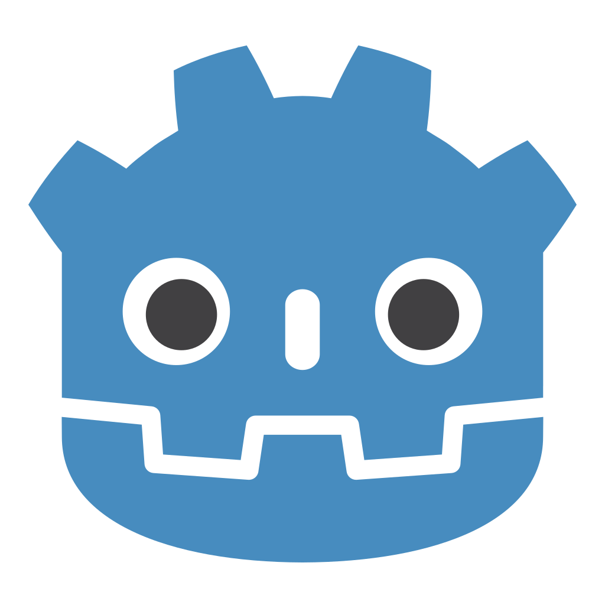

Who am I
Hello! My name is Finnegan McCarty and I am a Senior at Oakland Technical High School in the Computer Science Academy. This website is a collection of assignments, webpages, and projects have created or am creating for my Capstone class.
Hello! My name is Finnegan McCarty and I am a Senior at Oakland Technical High School in the Computer Science Academy. This website is a collection of assignments, webpages, and projects have created or am creating for my Capstone class.
I have some experience in several computer programming languages, most of which being attributed to my experience in different game engines. This includes:

I have also have experience in digital creative programs such as
GIMP  ,
FL Studio
,
FL Studio  ,
Audacity
,
Audacity  , and
Blender
, and
Blender  .
.